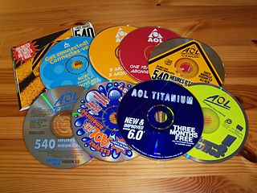
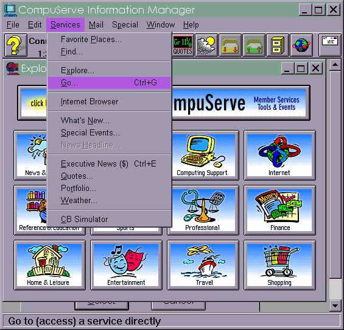
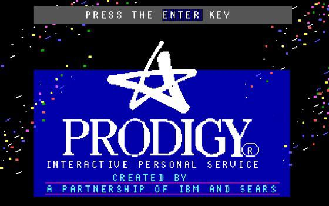
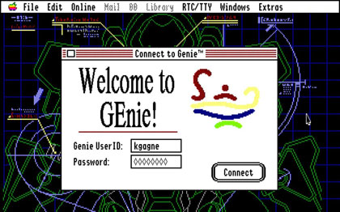
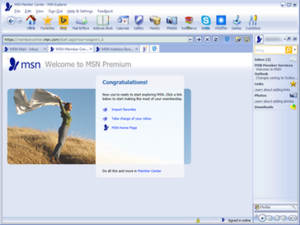

America Online (AOL)

America Online (AOL) - This private networking service first went online in November 1985 as PlayNET. The
company
went public in 1993, and edged out Prodigy and CompuServe to become the largest online service in 1995, with
three
million subscribers. New membership offers and CD-ROMs were ubiquitous, through direct mailings and
partnership
give-aways with products and event tickets. Early users of the dial-up service paid hourly connection fees,
which
later evolved into a flat monthly fee of $19.95.
In 2001, with 30 million users, and near the peak of its market capitalization, AOL acquired media
conglomerate
Time
Warner Corporation, which at $360 billion was the largest merger in history. After suffering rapid
subscriber
declines resulting from the growth of broadband and the World Wide Web, AOL was spun off from Time Warner in
2009.
It was acquired by the phone company Verizon in 2015 for $4.4 billion, which subsequently sold it (and
Yahoo!)
to
the private equity firm Apollo for $5 billion.
Compuserve

Compuserve - Founded in 1969, Compuserve was one of the first online services. Spun out of the Golden United
Life
Insurance company in 1975, it evolved from a business network to a fee-driven, dial-up consumer network. H&R
Block
acquired the company in 1980. The dial-up “walled garden” service offered email, online chats, online
forums,
software libraries and online games. Compuserve also introduced the .gif format for pictures. Its membership
peaked
in the early 1990s at around 3 million subscribers, and the subscriber service was acquired by rival AOL in
1997.
Prodigy

Prodigy - A joint venture between CBS, IBM, and Sears, Prodigy began service in 1984, as the use of personal
computers began to explode. It offered a user-friendly selection of news, weather, sports, message boards
and
many
other services. It was also a pioneer in online shopping and advertising. Bundled with sales of IBM’s PS1
and
PS2
personal computers, by 1990, Prodigy had accumulated almost a million subscribers. The company was acquired
by
the
newly-formed International Wireless in 1996 for $200 million, and went public in 1999. It was acquired in
2001
by
SBC Communications, and later merged into Yahoo!.
GEnie

GEnie - The global conglomerate General Electric formed an online service in 1985 that utilized its GE
mainframe
computers during their down-time. GEnie (General Electric Network for Information Exchange) never received
much
investment by its parent, and was slow to increase capacity and integrate new features. In 1996, GE sold
GEnie
to
Yovelle, which was later acquired by IDT Corporation. Peaking at only a few hundred thousand users, IDT shut
down
GEnie at the end of 1999.
MSN (the Microsoft Network)

MSN - Microsoft was late to offer its own service, MSN (the Microsoft Network) in 1995, alongside its
Windows 95
release. It was initially a dial-up service, which branched into a range of products and services for
Windows
devices. In 1998, the subscription model was retooled, and MSN transformed into a free web portal that
serves as
a
collection of Internet services and Microsoft apps.